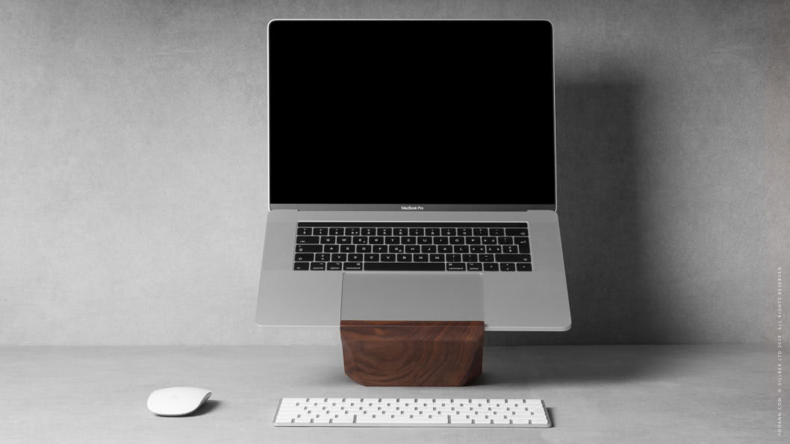
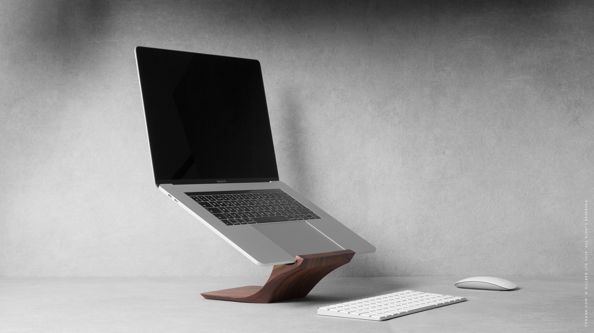
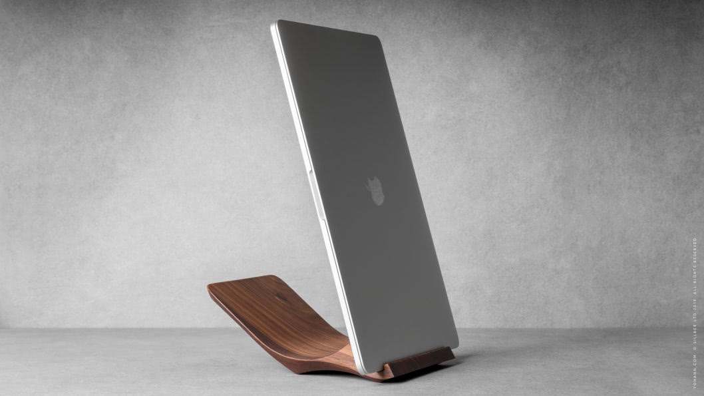

The Yohann MacBook stand gracefully elevates your laptop screen, promoting an upright sitting posture and a comfortable, ergonomic viewing angle for both a MacBook and MacBook Pro.
Working long hours at a laptop can be tiring, and create a serious strain on your back and neck. When used on a desk your laptop screen is usually positioned much too low. Your neck or back inevitably need to bend. The advantage of mobility of a laptop has its trade-off.
The Yohann MacBook stand follows general recommendations for ergonomic use. The stand enables you to position the top edge of your MacBook screen level with your eyes in an elegant way. It helps you to keep your head balanced on your spine and reduces the strain on your neck and back, allowing for a more comfortable experience throughout your day.
“Use a separate keyboard and mouse so the laptop can be put on a stand and the screen opened at eye level.”
 